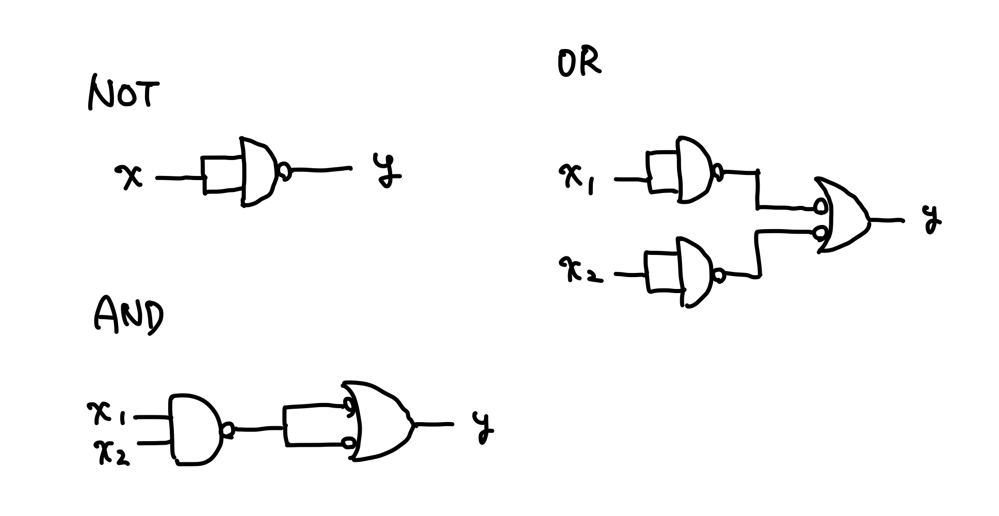

万能ゲート
あらゆる組み合わせ回路を構成可能な論理ゲートの組を万能な論理ゲート、万能ゲート（Universal logic gates）と呼ぶ。
万能ゲートの例
主加法標準形であったように、加法標準形設計手法であらゆる組み合わせ回路を構成できるので、{AND, OR, NOT}は万能ゲート。
また、より、{AND, NOT}も万能ゲート。
さらに、NANDやNORからAND、OR、NOTを構成することができるので、{NAND}と{NOR}も万能ゲート。たとえばnand2tetrisが実現できるのは、NANDが万能ゲートであるから。
NANDからAND、OR、NOTを導出する

ある回路を構成するゲートの最小個数を求める問題はNP困難（回路最小化問題）。
小さい回路の場合には全探索やパターンマッチによって事前に最小のゲート数を求めることができるが、n入力のブール関数で最小個数を求めることはできず、SATソルバーのようにヒューリスティックに求めるしかない。
回路最小化問題は最悪時間計算量と平均時間計算量がほぼ同じ。